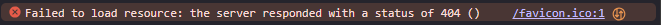

Easily use {fontawesome} icons as shiny favicons (the icons that appear on browser tabs). Font Awesome is a popular set of icons that can be used in web pages. {favawesome} provides a simple way to use these icons as favicons in shiny applications and other HTML pages.
Motivation
If you’ve spent time in the Chrome Developer Tools Console (ctrl + shift + I) for shiny apps, you may have seen this familiar error message:

False alarms make it easy to miss real error messages, so I wanted a way to silence that error message without adding a bunch of dependencies to my shiny app. This package does not add any dependencies that are not already required by {shiny}.
Usage
Add a call to favawesome::fav() to your shiny UI code or other HTML.
Code of Conduct
Please note that the {favawesome} project is released with a Contributor Code of Conduct. By contributing to this project, you agree to abide by its terms.